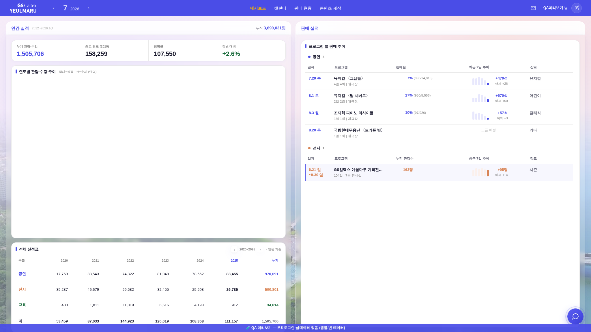
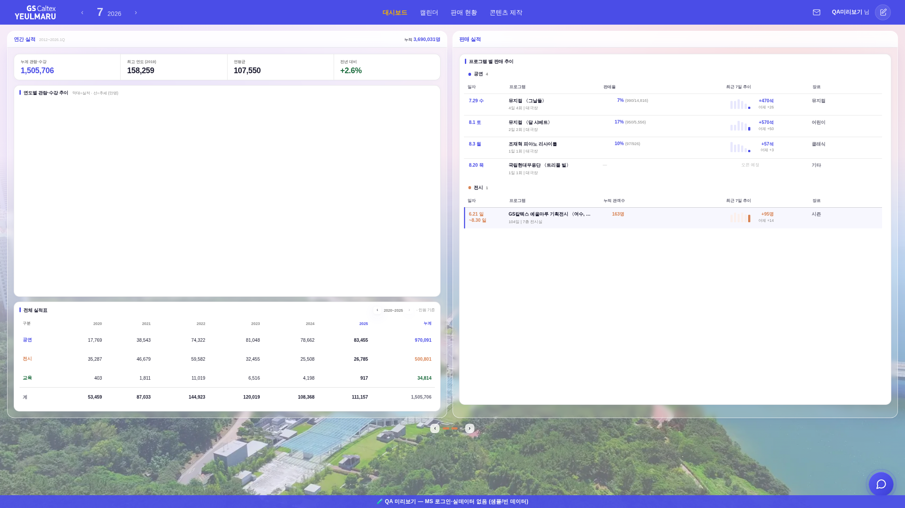

?qa=1#biz rAF 샘플러 · tools/scratch/probe_bizboot.mjs규격 줌(_bizZoomApply)은 23k행짜리 단일 파일의 스크립트 본문에서 호출된다. 그래서 파싱·부팅이 끝날 때까지
250~370ms 동안 줌이 없는 크기로 화면이 먼저 그려지고, 그 뒤에 줌이 걸리며 한 번 튄다.
브라우저 줌을 올려 쓰는 화면(110·125%)에선 상쇄 줌이 1보다 작아서(z=0.8) 크게 떴다가 작아지는 방향으로 보인다.
| 전 (1차 수정본) | zoom | 실제 적용 css zoom | 연간 실적 보드 폭 |
|---|---|---|---|
| t = 135ms | - | 1 | — |
| t = 265ms | - | 1 | 989 (줌 없는 큰 상태로 그려짐) |
| t = 372ms | 0.8 | 0.8 | 996 ← 이 순간 튐 |
| 후 (선적용) | zoom | 실제 적용 css zoom | 연간 실적 보드 폭 |
|---|---|---|---|
| t = 77ms | 0.8 | 1 | — (아직 콘텐츠 없음) |
| t = 208ms | 0.8 | 0.8 | 996 (처음부터 확정 크기) |
| t = 266ms | 0.8 | 0.8 | 996 (변화 없음) |
핵심: 콘텐츠가 그려지기 전(t=77ms)에 줌이 확정되므로, 중간 크기로 그려지는 프레임이 0개다.


두 상태의 글자·카드 크기 차이가 25% — "잠깐 크게 떴다가 작아진다"의 실체다(창 2048 · 브라우저 125% 기준).
#body-wrap 여는 태그 바로 뒤에 선적용 인라인 스크립트를 뒀다 — 파서가 거기서 멈춰 실행하므로 첫 페인트 전에 줌이 확정된다.
줌 계산식은 그 한 곳(_bizZoomTarget)에만 두고 본문 _bizZoomApply(리사이즈·모드 전환)가 같은 함수를 재사용한다 — 값 이원화 없음.
_mainView는 아직 선언 전이라, 같은 규칙으로 원본 sessionStorage.mvView를 읽는다. <script>는 UA display:none이라 부모 flex 항목이 되지 않는다.
| 조건 | 최종 zoom | 확정 시각 | 판정 |
|---|---|---|---|
| 2048창 · 브라우저 125% | 0.8 | 77ms (전 372ms) | 튐 제거 |
| 2400창 · 브라우저 80% | 1.25 | 60ms (전 230ms) | 튐 제거·값 동일 |
| 2560창 · 브라우저 100% | 미적용(1) | — | 무변 |
check_design ✓(raw hex 1605/1605 무변·:root 2/0·신규 토큰 0) · check_refs ✓ · smoke 로그인 ✓(JS 회귀 0) · 콘솔 에러 0